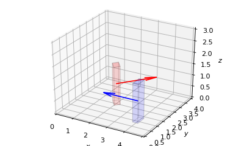
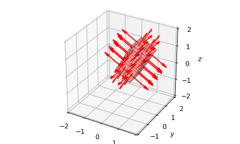

Human (Cube)¶
-
class
owcsimpy.geoobjects.models.humancube_py.HumanCube_py(direction, loc, dimensions, identity, reflectivities={'hair': 1, 'shirt': 1})[source]¶ A simple human model with a 3D cube.
The human is assumed to have a surface touching xy-plane at z=0. Therefore, the location will be defined as 2D array.
Dimensions are now defined such that the cube’s original position has the polar angle of 90deg and azimuth of 0 deg (see the notes below).
HumanCube_py is inherited from
Cube_py- Parameters
- loc: ndarray(2,)
Location in xy-plane.
- dimensions: ndarray(3,)
- direction: float
The direction of the human is modeled as the azimuth angle.
- identity: int
- reflectivities: dict
The keys are ‘shirt’ and ‘hair’.
See also
Notes
z ; V V W V ;**I**; ;;**IIVMFVVVVVVFFVIII**;; ;;*IIIVVFVVVVVVVMVVVVVVVVVVVVVVVV$$VI; *IVVVFVVVVVVVVVVVVVVVVVVVVVVVVVVVIII**;;;;* *;**IIIVFVVVVVVVVVVVVVVVFVIII**;;;;;;;;;;;; I;;;;;;;;**IIVVFVFVVII**;;;;;;;;;;;;;;;;;* *;;;;;;;;;;;;;;;I;;;;;;;;;;;;;;;;;;;;;;;;I *;;;;;;;;;;;;;;;*;;;;;;;;;;;;;;;;;;;;;;;;I *;;;;;;;;;;;;;;;*;;;;;;;;;;;;;;;;;;;;;;;;I *;;;;;;;;;;;;;;;*;;;;;;;;;;;;;;;;;;;;;;;;I *;;;;;;;;;;;;;;;*;;;;;;;;;;;;;;;;;;;;;;;;* ;;;;;;;;;;;;;;;;*;;;;;;;;;;;;;;;;;;;;;;;;I ;*;;;;;;;;;;;;;;*;;;;;;;;;;;;;;;;;;;;;;;;* H *;;;;;;;;;;;;;;*;;;;;;;;;;;;;;;;;;;;;;;;* I;;;;;;;;;;;;;;I;;;;;;;;;;;;;III;;;;;;;;I y I;;;;;;;;;;;;;;I;;;;;;;;;;;;;;;*IIIII;;;* ***; *;;;;;;;;;;;;;;*;;;;;;;;;;;;;;;;;;;;;*IIV**;***** *;;;;;;;;;;;;;;*;;;;;;;;;;;;;;;;;;;;;;;;I*IVI***; *;;;;;;;;;;;;;;*;;;;;;;;;;;;;;;;;;;;;;;;I ****** *;;;;;;;;;;;;;;*;;;;;;;;;;;;;;;;;;;;;;;;* ****** *;;;;;;;;;;;;;;*;;;;;;;;;;;;;;;;;;;;;;;;* ;*****; I;;;;;;;;;;;;;;*;;;;;;;;;;;;;;;;;;;;;;**; ;** n *;;;;;;;;;;;;;;*;;;;;;;;;;;;;;;;;;**** ***;;;;;;;;;;;;*;;;;;;;;;;;;;****; ;***;;;;;;;;;*;;;;;;;;;;***V** ****;;;;;I;;;;;;***; ;**** L ****;I;****; ***** *I*; ;**** ****; ****; ;****; ****; ***** * xExamples
>>> import matplotlib.pyplot as plt >>> import numpy as np >>> >>> from owcsimpy.geoobjects.models.humancube_py import HumanCube_py as Human >>> from owcsimpy.geoutils.draw import draw >>> >>> rho_keys = ['shirt','hair'] >>> rho_vals = [0.3,0.6] >>> reflectivities = {rho_keys[i]:rho_vals[i] for i in range(2)} >>> >>> persons = [] >>> persons.append(Human( >>> direction=np.deg2rad(45), >>> loc=np.array([2,2]), >>> dimensions=[0.3,0.5,1.7], >>> identity=2, >>> reflectivities=reflectivities)) >>> persons.append(Human( >>> direction=np.deg2rad(180), >>> loc=np.array([4,1]), >>> dimensions=[0.3,0.5,1.7], >>> identity=2, >>> reflectivities=reflectivities)) >>> draw(models3d=persons,xlim=[0,5],ylim=[0,4],zlim=[0,3], >>> facecolors=['red','blue'],colors=['red','blue']); >>> >>> plt.show()
-
getOuterVerts(self)[source]¶ Get outer vertices of a 3D object.
This is used to check whether a 3D object intersects with another 3D object by means of convex hull.
-
getPartition(self, Ps=[1, 1, 1], delta=None)[source]¶ Get a list of partitioned planes of each face.
Overriding the method from the parent class as we don’t need the bottom face.
- Parameters
- Ps: list
List of number of partition of each face.
- delta: list
Define the partition based on partition lengths
- Returns
- list:
A list of partitioned planes. Each plane is an instant of RectPlane_py.
Examples
>>> import matplotlib.pyplot as plt >>> import numpy as np >>> >>> from owcsimpy.geoobjects.bases.vector_py import Vector_py as Vector >>> from owcsimpy.geoobjects.bases.cube_py import Cube_py as Cube >>> from owcsimpy.geoutils.draw import draw >>> cube = Cube( >>> Vector(np.array([1,np.deg2rad(90),np.deg2rad(90)])), >>> ctrPoint = np.array([0.5,0.5,0.5]), >>> dimensions = [2,1,1], >>> RodriguesAngle = np.deg2rad(30) >>> ) >>> planes = cube.getPartition(delta=0.5) >>> fig,ax = draw(planes=planes,alphas=0.2,xlim=[-2,2],ylim=[-2,2],zlim=[-2,2]) >>> plt.show()
